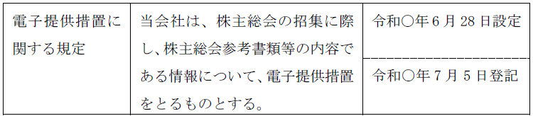

第２編 株式会社
第２章 機関
第１節 総説
会社の意思決定又は行為をする者として法によって定められている自然人又は会議体である機関の存在
1. 必須の機関
すべての株式会社には、株主総会と取締役が必要である（会社法326条1項）。
2. 機関設計
| 必要な機関 | 設置義務のある会社 |
| 取締役会（※1） | ① 公開会社（会社法327条1項1号）（※3） |
| ② 監査役会設置会社 | |
| ③ 指名委員会等設置会社 | |
| ④ 監査等委員会設置会社 | |
| 監査役 （※2） | ① 取締役会設置会社（※1） |
| ② 会計監査人設置会社 | |
| 監査役会（※2） | 大会社（※4）である公開会社 |
| 会計監査人 | ① 指名委員会等設置会社 |
| ② 大会社（会社法328条）（※4） | |
| ③ 監査等委員会設置会社 |
※1 取締役会を置いた場合、監査役、監査等委員会、指名委員会等のいずれかが必要である（会社法327条2項本文）。
ただし、会計監査人設置会社以外の非公開会社で会計参与を置いた場合は、監査役等を設置しなくてよい（会社法327条2項ただし書）。
※2 指名委員会等設置会社及び監査等委員会設置会社は除く（会社法327条3項、328条1項）。
【事業年度とは？】
法人の財産及び損益の計算の単位となる期間（法人税法13条1項）。
ex. 株式会社は、4月1日～3月31日、1月1日～12月31日、6月1日～5月31日等、事業年度を任意に定めることができる。
事業年度は、最長でも1年を超えることはできない。ただし、事業年度の変更をした場合、変更後の最初の事業年度は、1年6か月を超えない期間とすることができる（会社計算規59条2項後段）。
3. 機関設置の要件
(1) 取締役会設置会社でない株式会社は、監査役会、監査等委員会、指名委員会等を置くことができない（会社法327条1項2号、3号、4号）。
(2) 会計監査人を置くためには、監査役、監査等委員会、指名委員会等のいずれかが必要である（会社法327条3項、5項）。
経営者と会計監査人の癒着を防止し、また、正直・誠実な会計監査人を経営者による不利益な取扱いから守り、同時に、外部的な会計監査機関たる会計監査人と会社との接点たる存在となることが期待されるからである。
(3) 監査等委員会設置会社及び指名委員会等設置会社には、監査役を置くことができない（会社法327条4項）。
監査等委員会設置会社には監査等委員会が、指名委員会等設置会社には監査委員会があるからである。
(4) 指名委員会等設置会社は、監査等委員会を置いてはならない（会社法327条6項）。
第２節 株主総会と種類株主総会
Ⅰ 株主総会
1. 意義
株主総会：株式会社の意思を決定する合議制の法定の必要的機関（会社法295条1項）
(1) 意思決定の範囲
株主総会は、実質的所有者たる株主により構成される機関であるから、本来は、あらゆる事項を決定する万能機関である。しかし、取締役会設置会社においては、法令・定款に定める事項の意思決定に限定する。
| 取締役会非設置会社 | 株式会社に関する一切の事項の意思決定（295Ⅰ） |
| 取締役会設置会社 | 法令・定款に定める事項の意思決定（295Ⅱ） |
(2) 権限の委譲
法定された株主総会の決議事項は、株主の利益に重大な影響があるため株主総会の権限事項とされたものであるから、取締役、執行役、取締役会その他の株主総会以外の機関が決定することができることを内容とする定款の定めは、その効力を有しない（会社法295条3項）。
1. 招集時期
| 定時株主総会 | 毎事業年度の終了後一定の時期（※）に招集しなければならない（会社法296条1項） |
| 臨時株主総会 | 必要がある場合にはいつでも招集することができる（会社法296条2項） |
※ 基準日を定めた場合は、会社法124条2項により決算期〔事業年度末日〕から3か月以内
2. 招集手続の要否
| 原則 | 法定の手続に従って権限ある者が招集する必要がある |
| 株主全員の同意があるとき | 書面又は電磁的方法による議決権の行使を認める場合を除き（※）、招集の手続を経ずに株主総会を開催することができる（会社法300条） |
※ これらは、株主が株主総会に出席せずに議決権を行使することを認める制度であり、これを可能にするためには、招集通知及び参考書類の送付という手続が不可欠だからである。
3. 招集権者
(1) 総説
(a) 原則
取締役の決定（取締役会設置会社では取締役会の決議）に基づき、取締役が招集する（会社法296条3項、298条1項、4項）。
(b) 例外
ⅰ 少数株主による招集（会社法297条4項）
ⅱ 裁判所による招集の決定（会社法307条、359条）
上記ⅰⅱいずれも、取締役等の恣意により株主総会が開かれないときに、株主の利益を保護するものである。
※招集の際に定め、招集通知に記載する必要がある事項（会社法298条1項各号、299条4項）
| ①株主総会の日時及び場所 |
| ②株主総会の目的である事項があるときは、当該事項 |
| ③株主総会に出席しない株主が書面によって議決権を行使することができることとするときは、その旨 ex. 議案ごとに「賛」「否」のマルを付ける返信用ハガキが株主に送付され、株主が株式会社にそのハガキを送り返す |
| ④株主総会に出席しない株主が電磁的方法によって議決権を行使することができることとするときは、その旨 ex. 株主ごとに割り振られたID・Passでウェブサイトにアクセスし、ウェブサイト上で議案ごとに「賛」「否」の投票をする |
| ⑤その他、法務省令で定める事項 |
電子提供措置をとる旨の定款の定めがあり、当該措置をとる場合には、上記①から④に加え、以下の事項を招集通知に記載・記録しなければならない（会社法325条の4第2項各号）。
・電子提供措置をとっているときは、その旨
・定時株主総会に係る電子提供措置事項を記載した有価証券報告書の提出の手続を開示用電子情報処理組織（EDINET）を使用して行ったときは、その旨
・その他、法務省令で定める事項（電子提供措置事項に係る情報を掲載するWEBサイトのアドレス等）
(2) 取締役会の決議を経ないで代表取締役が招集した株主総会決議の効力
通説・判例（最判昭46.3.18）は、招集手続の法令違反として、決議取消しの訴えの対象となるとする（会社法831条1項1号）。
(3) 株主による招集の請求
(a) 招集請求
以下の要件を満たす株主は、取締役に対し、株主総会の目的である事項（当該株主が議決権を行使できる事項に限る）及び招集の理由を示して、株主総会の招集を請求することができる（会社法297条1項、2項）。
| 公開会社 | 総株主の議決権の100分の3以上の議決権を6か月以上前から引き続き有する株主 |
| 非公開会社 | 総株主の議決権の100分の3以上の議決権を有する株主 |
※「100分の3」又は「6か月」の要件は、定款でこれを下回る割合を定めることができる（会社法297条1項括弧書）。株主が招集請求しやすくなる方向であるため、認められている。
(b) 招集手続が行われない場合
以下のいずれかに該当する場合には、上記の請求をした株主は、裁判所の許可を得て、自ら株主総会を招集することができる（会社法297条4項）。
| ①上記の請求の後遅滞なく招集手続が行われない場合 |
| ②上記の請求があった日から8週間以内の日を株主総会の日とする招集通知が発せられない場合 |
上記の請求があった日から8週間以内の日を株主総会の日とする招集通知が発せられない場合にも招集ができるのは、取締役が、株主からの請求を受けて形式的には招集手続を進めているように見せながら、実際には株主総会の期日を先に設定する等して、実質的に株主による株主総会の招集を妨げることを防止するためである。
なお、上記の「8週間」の要件は、定款によりこれを下回る期間を定めることができる（会社法297条4項2号括弧書）。
4. 招集地
会社法では、特に制限はない。よって、株式会社の本店の近隣である必要はない。
ただし、株主が出席しにくい招集地をことさらに選択した場合には、招集手続が著しく不公正な場合として、株主総会決議の取消事由となり得る（会社法831条1項1号）。
5. 招集方法
(1) 招集通知の発送時期
招集通知は次に掲げる方法によって行う（会社法299条）。
| 公開会社 | 非公開会社 | |||
| 取締役会設置会社 | 取締役会非設置会社 | |||
| 通知方法 | ① 書面（299Ⅱ） ② 株主の承諾を得れば、①に代えて、電磁的方法（299Ⅲ） |
制限なし（※1） | ||
| 発信期間 | 原則 | 株主総会の日の2週間前（299Ⅰ） | 株主総会の日の1週間前（※2）（※3） | |
| 例外 | ─ | 定款で期間の短縮可（※3） | ||
（※1） 書面投票又は電子投票ができる旨を定めた場合には、上記①又は②の方法によってする（会社法299条2項1号、3項）。
（※2） 書面投票又は電子投票ができる旨を定めた場合には、2週間前までにしなければならず、取締役会非設置会社であっても、期間の短縮は認められない（会社法299条1項括弧書）。
（※3） 電子提供措置をとる旨の定款の定めがあり、当該措置をとらなければいけない場合には、非公開会社や取締役会非設置会社であっても、発信期間は「株主総会の日の2週間前」であり、期間の短縮は認められない（会社法325条の4第1項）。
(2) 書面による招集通知
招集通知は、以下の場合には、書面でしなければならない（会社法299条2項）。
①書面若しくは電磁的方法による議決権行使を定めた場合
この場合、株主に対して株主総会参考書類・議決権行使書面（会社法301条）を送付しなければならないからである。
②取締役会設置会社の場合
取締役会設置会社の場合、株主は経営にはあまり関知していないと考えられるので、株主総会の資料を渡して、株主に株主総会のための準備の機会を与える必要があるからである。
(3) 招集通知がされる者
株主には招集通知がされるのが原則であるが、株主総会において議決権を行使することができない株主には招集通知がされない（会社法299条1項、298条2項括弧書）。
※株主総会の延期又は続行
株主総会において延期又は続行の決議があった場合、再び招集の決定・招集通知をする必要はない（会社法317条、298条、299条）。
6. 株主総会資料の提供
(1) 株主総会資料の提供方法
(a) 原則の提供方法
株主総会資料は、原則として書面により交付しなければならない（会社法299条2項、301条1項）。株主総会招集通知を電磁的方法により発送することを承諾した株主に対しては、電磁的方法により提供することができるが（会社法299条3項）、この場合であっても、株主の請求があれば、書面の交付を要する（会社法301条2項）。
(b) 電子提供措置をとる旨の定款の定め（会社法325条の2）
株式会社は、取締役が株主総会（種類株主総会を含む。）の招集の手続を行うときは、ⅰからⅳに掲げる資料（以下「株主総会参考書類等」という。）の内容である情報について、電子提供措置（電磁的方法により株主（種類株主総会を招集する場合にあっては、ある種類の株主に限る。）が情報の提供を受けることができる状態に置く措置であって、法務省令で定めるものをいう。）をとる旨を定款で定めることができる。この場合において、定款には、電子提供措置をとる旨を定めれば足り、WEBサイトのアドレスまで定款に定める必要はない。
ⅰ 株主総会参考書類
ⅱ 議決権行使書面
ⅲ 第437条の計算書類及び事業報告
ⅳ 第444条第6項の連結計算書類
(2) 電子提供措置をとる旨の定款の定めの効果（会社法325条の4第3項）
電子提供措置をとる旨の定款の定めがある会社では、取締役は、株主総会招集通知の発送の際、以下の書類等を交付する必要がない（会社法325条の4第3項）。書類の印刷・株主への郵送コストを削減する趣旨である。
ⅰ 株主総会参考書類（会社法301条1項、302条1項）
ⅱ 議決権行使書面（会社法301条1項）
ⅲ 計算書類、事業報告（会社法437条）
ⅳ 連結計算書類（会社法444条6項）
もっとも、株主総会招集通知については、前記5.⑴のとおり、株主の個別の承諾を得なければ、電磁的方法によることはできないため注意を要する（会社法299条2項、3項）。
(3) 電子提供措置を利用できる会社
電子提供措置をとる旨の定款の定めをおくことができる株式会社に制限はないが、振替株式を発行する株式会社は、電子提供措置をとる旨を定款で定めることが義務付けられる（振替法159条の2第1項）。
(4) 電子提供措置の内容等（会社法325条の3）
(a) 電子提供措置の対象となる事項（電子提供措置事項）（会社法325条の3第1項各号）
電子提供措置をとる旨の定款の定めがある会社であって、①書面若しくは電磁的方法によって議決権を行使できる旨を定めている場合（会社法299条2項1号）、又は②取締役会設置会社である場合（同項2号）には、以下の事項について電子提供措置をとらなければならない。①または②に該当しない場合には、現行法上、招集通知を書面ですることを要しないため（会社法299条2項参照）、電子提供措置をとる旨の定款の定めがある場合であっても、電子提供措置をとることを要しない。
ⅰ 第298条第1項各号に掲げる事項（招集通知に記載すべき事項。前記3.⑴※参照）
ⅱ 書面による議決権行使ができる旨を定めた場合に株主総会参考書類及び議決権行使書面に記載すべき事項
ⅲ 電子投票制度を採用した場合に株主総会参考書類に記載すべき事項
ⅳ 株主が議案要領通知請求（会社法305条1項）をした場合に株主に通知すべき議案の要領
ⅴ 取締役会設置会社である場合において、取締役が定時株主総会を招集するときは、第437条の計算書類及び事業報告に記載され、又は記録された事項
ⅵ 会計監査人設置会社（取締役会設置会社に限る。）である場合において、取締役が定時株主総会を招集するときは、第444条第6項の連結計算書類に記載され、又は記録された事項
ⅶ 前各号に掲げる事項を修正したときは、その旨及び修正前の事項
(b) 電子提供措置期間（会社法325条の3第1項柱書）
株主総会の日の3週間前の日又は招集通知を発した日のいずれか早い日（電子提供措置開始日）から株主総会の日後3か月を経過する日までの間
電子提供措置期間の末日は、株主総会決議取消しの訴えの提訴期間（3か月。会社法831条1項柱書）を考慮して定められたものである。
(c) 電子提供措置を要しない特例（会社法325条の3第2項、3項）。
ⅰ 議決権行使書面を交付する場合
議決権行使書面に記載すべき事項も電子提供措置事項であるが（会社法325条の3第1項第2号）、取締役が株主総会の招集の通知に際して株主に対し議決権行使書面を交付するときは、電子提供措置をとることを要しない。
ⅱ 開示用電子情報処理組織（EDINET）を使用する場合
金融商品取引法第24条第1項の規定によりその発行する株式について有価証券報告書を内閣総理大臣に提出しなければならない株式会社が、電子提供措置開始日までに電子提供措置事項（定時株主総会に係るものに限り、議決権行使書面に記載すべき事項を除く。）を記載した有価証券報告書（添付書類及びこれらの訂正報告書を含む。）の提出の手続を同法第27条の30の2に規定する開示用電子情報処理組織を使用して行う場合には、当該事項に係る情報については、電子提供措置をとることを要しない。
(5) 電子提供措置をとる旨を定めた場合の書面交付請求（会社法325条の5）
(a) 株主が書面交付請求をした場合
電子提供措置をとる旨を定めた株式会社の株主（電磁的方法による株主総会の招集通知を発することを承諾した株主を除く。）は、会社に対し、電子提供措置事項を記載した書面の交付を請求することができる（会社法325条の5第1項）。インターネットを利用できない株主に配慮した規定である。
書面交付請求は、原則として株主総会の招集通知が発出されるまで（株式会社が当該株主総会において議決権を行使することができる者を定めるための基準日を定めた場合にあっては、当該基準日まで）にしなければならない（会社法325条の5第2項）。
取締役は、書面交付請求があった場合には、当該株主に対し、当該株主総会に係る電子提供措置事項を記載した書面を交付しなければならない（会社法325条の5第2項）。
一度された書面交付請求は、その後の全ての株主総会及び種類株主総会について効力を有する（会社法325条の5第1項参照）。臨時株主総会の開催については、招集通知を受ける前に株主が知ることは困難で、書面交付請求をすることができず、不意打ちとなる可能性があることを考慮した規定である。
(b) 書面交付請求の失効（会社法325条の5第4項、同第5項）
書面交付請求の日から1年を経過したときは、株式会社は、当該請求をした株主に対し、書面の交付を終了する旨を通知し、かつ、これに異議のある場合には1か月以上の催告期間内に異議を述べるべき旨を催告することができる（会社法325条の5第4項）。当該通知及び催告によって、以下の効力を生じる。
ⅰ 株主が催告期間内に異議を述べなかった場合
この場合、書面交付請求は、催告期間を経過したときに失効する（会社法325条の5第5項）。
なお、当該株主が改めて書面交付請求をすることは認められる。
ⅱ 株主が異議を述べた場合
この場合、書面交付請求は失効しない。
もっとも、株式会社は、異議を述べた日から 1年を経過したときは、同様に通知及び催告をすることができる（会社法325条の5第4項）。
(c) 定款の定めによる記載事項の除外（会社法325条の5第3項）
株式会社は、電子提供措置事項のうち法務省令で定めるものの全部又は一部については、株主に交付する電子提供措置事項を記載した書面に記載することを要しない旨を定款で定めることができる（会社法325条の5第3項）。
(6) 電子提供措置の中断（会社法325条の6）
電子提供措置期間中に電子提供措置の中断（株主が提供を受けることができる状態に置かれた情報がその状態に置かれないこととなったこと又は当該情報がその状態に置かれた後改変されたこと（会社法325条の3第1項第7号の規定により修正されたことを除く。）をいう。）が生じた場合において、次のⅰからⅳのいずれにも該当するときは、その電子提供措置の中断は、当該電子提供措置の効力に影響を及ぼさない（会社法325条の6）。
ⅰ 電子提供措置の中断が生ずることにつき株式会社が善意でかつ重大な過失がないこと又は株式会社に正当な事由があること
ⅱ 電子提供措置の中断が生じた時間の合計が電子提供措置期間の10分の1を超えないこと
ⅲ 電子提供措置開始日から株主総会の日までの期間中に電子提供措置の中断が生じたときは、当該期間中に電子提供措置の中断が生じた時間の合計が当該期間の10分の1を超えないこと
ⅳ 株式会社が電子提供措置の中断が生じたことを知った後速やかにその旨、電子提供措置の中断が生じた時間及び電子提供措置の中断の内容について当該電子提供措置に付して電子提供措置をとったこと
(7) 登記手続
(a) 登記期間
株式会社が電子提供措置をとる旨の定款の定めを設け、又は当該定めの廃止をした場合には、効力発生日から2週間以内に変更登記をしなければならない（会社法911条3項12号の2、915条1項）。
(b) 申請書の内容
【申請例2 電子提供措置をとる旨の定款の定め 設定】
事例： 令和○年6月28日、株主総会において、下記の内容の電子提供措置をとる旨の定款の定めを置く旨の定款変更決議がされた。
「当会社は、株主総会の招集に際し、株主総会参考書類等の内容である情報について、電子提供措置をとるものとする。」

【申請例（参考） 電子提供措置をとる旨の定款の定め 廃止】
事例： 令和○年6月28日、株主総会において、電子提供措置をとる旨の定款の定めを廃止する旨の定款変更決議がされた。
①登記の事由
【設定の場合】
「電子提供措置に関する規定の設定」と記載する。
【廃止の場合】
「電子提供措置に関する規定の廃止」と記載する。
②登記すべき事項
【設定の場合】
登記すべき事項は、電子提供措置をとる旨の定款の定め及び変更年月日である。
「年月日設定
当会社は、株主総会の招集に際し、株主総会参考書類等の内容である情報について、電子提供措置をとるものとする。」
等と記載する。
【廃止の場合】
登記すべき事項は、電子提供措置をとる旨の定款の定めを廃止した旨及び廃止年月日である。
「年月日電子提供措置に関する規定の廃止」と記載する。
③添付書面
ⅰ 株主総会議事録（特別決議の要件を満たすもの）
定款変更決議をした株主総会の議事録を添付する。
ⅱ 株主の氏名又は名称、住所及び議決権数等を証する書面（株主リスト）（商登規61条3項）
具体的には、代表者作成の証明書がこれに当たる。
ⅲ 委任状
④登録免許税
申請件数1件につき、3万円（登免法別表1.24(1)ツ）。